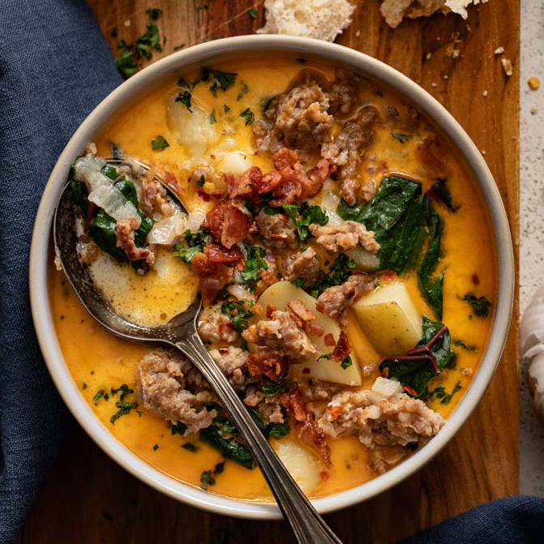

Home
Slow Cooker Zuppa Toscana

A rich soup for those cozy feeling days. Prep, set, and forget about it until its time to chow down!
Prep Time: 20 minutes
Cook Time: 3-6 hours
Ingredients
- 1 lbs bulk pork sausage
- 1 yellow onion, chopped
- 2 tablespoons minced garlic
- 4 large russet potatoes, chopped
- 1/2 teaspoon salt
- 1/4 teaspoon ground black pepper
- 1 pinch red pepper flakes
- 1 (32oz) container chicken broth
- 2 cups water, or as needed
- 1 cup heavy whipping cream
- 1 bunch kale, stems removed and leaves torn to bite size pieces
- (Optional)1/4 cup shredded parmesan cheese
Directions
- Cooking the sausage: Heat a skillet over medium-high heat. Cook and stir sausage until brown and crumbly, usually 5 to 7 minutes. Add onion and garlic; satue until onion is tender and translucent, 3 to 5 minutes.
Drain and Discard grease
- Starting the slow cooker: Place potatoes in the cooker; add cooked sausage and onion mix. Season with salt, black pepper, and red pepper flakes. Pour in chicken broth and up to 2 cups of water to completely cover the potatoes. Gently stir and cover.
- Slow cooking: Cook on Low for 5 to 6 hours (or) High for 3 to 4.
- Finishing touch: After cooking pour in heavy cream and kale then stir to combine. Cook for another 30 minutes on High for flavors to combine.
- (Optional): Garnish with parmesan cheese